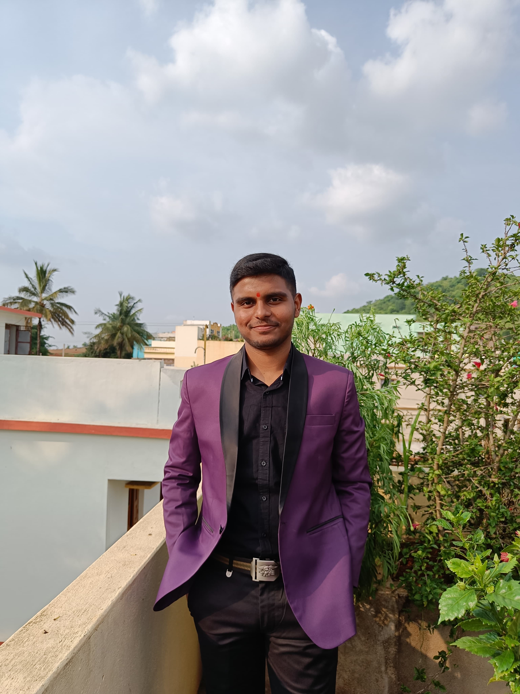

Email: 22bca123.ayushsingh@giet.edu Mob: +91 6372899260
| Course | University/Board | Year | Percentage |
|---|---|---|---|
| BCA | GIET University, Gunupur | 2025 | 8.4 CGPA |
| 12th | Public School, Sunabeda | 2022 | 85% |
| 10th | JJCS, Semiliguda | 2020 | 89 % |
Java, python, JavaScript,HTML, CSS, Bootstrap, Node JS, React JS
Leadership, Teamwork, Communication, Problem Solving, Time Management
Name of the project Fundraising website Tech Stacks HTML, CSS, Bootstrap, JavaScript, MongoDB, Express JS, Node JS Description Led Frontend Development Team, Managed Frontend (99%). Developed features to optimize user experience and enhance accessibility throughout the fundraising process
Name of the project Health Care Website Tech Stacks HTML, CSS, Bootstrap, JavaScript, MongoDB, Express JS, Node JS Description Led frontend development for a healthcare website, creating a responsive interface focused on user accessibility, seamless navigation, and efficient healthcare solutions. Implemented AI-Driven disease prediction (95% accuracy).